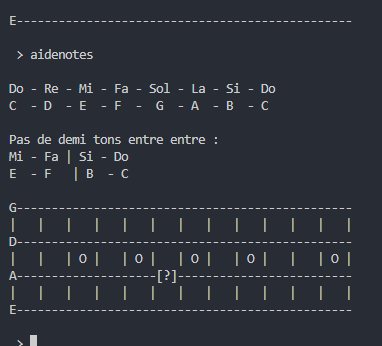
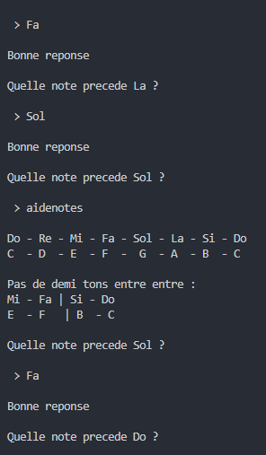
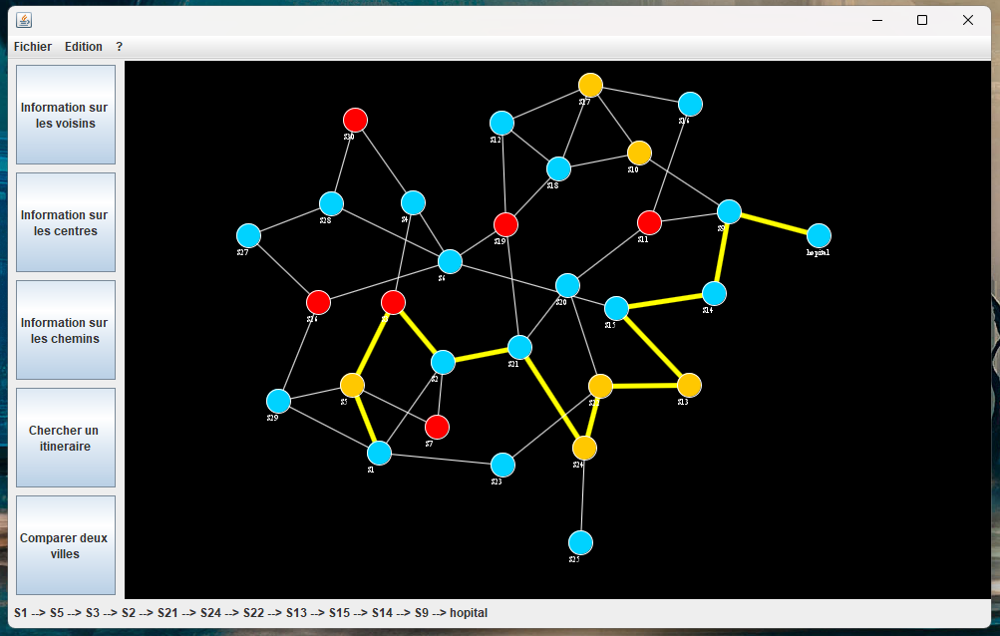
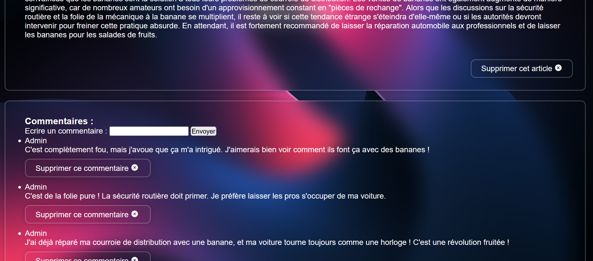

Réalisations Informatiques

12cm3

Exercices de solfège

Pathfinder

Weblog42

Parkings de Lyon
12cm3
12cm3 est un jeux-vidéo créé en java dans le cadre d'un projet de cours. C'est un jeu de rally compétitif avec enregistrement des chrono sur un serveur.
Le projet a été fait en coopération avec Rayan Tail, Lomé Bordes et Mael Ferry


Exercice de Solfège
Petit projet personnel en python visant a se familiariser avec les notes de musiques, on retrouve les exercices suivants :
- Deviner les suite de notes
- Retenir les positions des notes sur le fretboard d'un instrument à corde
- Apprendre les traductions entre notation française et anglaise
- Situer les notes sur la porté en clef de Sol ou en clef de Fa


Pathfinder
PathFinder est un logiciel java de visualisation et de recherche sur graphe, les fonctionnalités implémentées les plus marquantes sont :
Une physique "force-oriented" permettant de déplacer les points du graphe

Recherche de plus cours chemins sur graphe pondéré
En coopération avec Astrid Délepine et Baptiste Tricot
Weblog42
Dans le cadre d'un projet de cours, nous avons fait un blog en php. Nous avons décidé de lui donner un aspect néo rétro

Parkings de lyon
Projet android Studio exploitant l'open data du Grand Lyon pour proposer une application mobile d'assistance au stationnement. L'application donnes les informations suivantes :
- Nom des parkings
- Horaires
- Tarification
- Places disponibles en temps réel